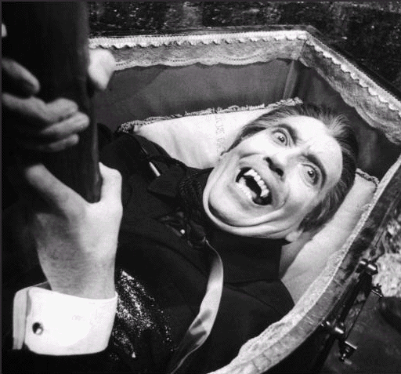

Who's on the Menu Tonight?

First Blood
(Introduction)
Evaluation of Victims and Bloodsuckers
(Evaluation of ATP Problems and Systems)
Victims that a Vampire Likes
(Problems that Vampire can Solve)
Victims that a Vampire Doesn't Like
(Problems that Vampire Can't Solve)
Victims that a Vampire Might Share
(Problems that Vampire and Other Systems can Solve)
Death - Any Questions?